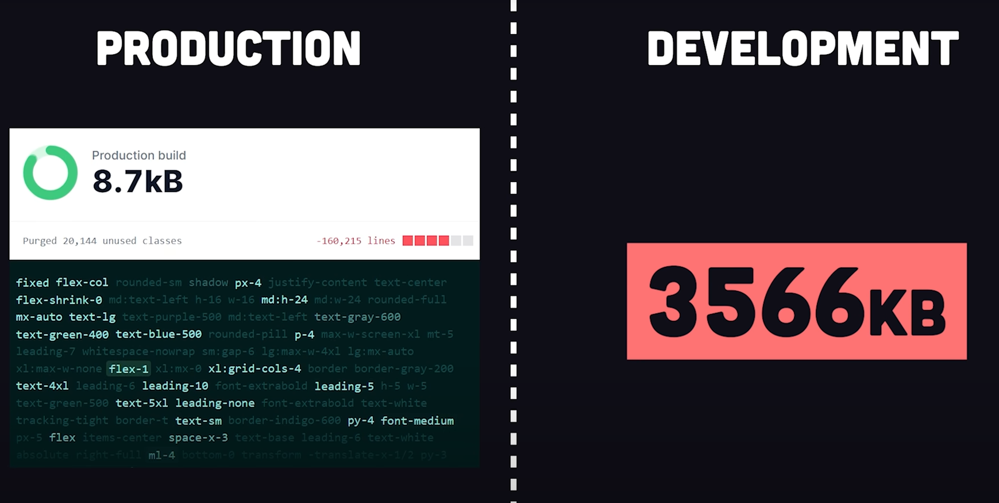
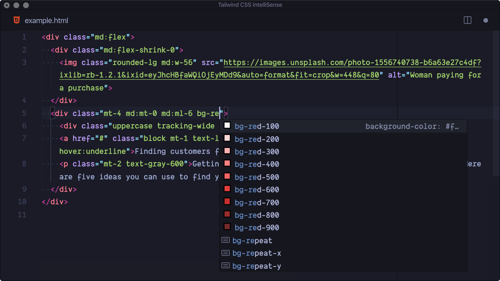
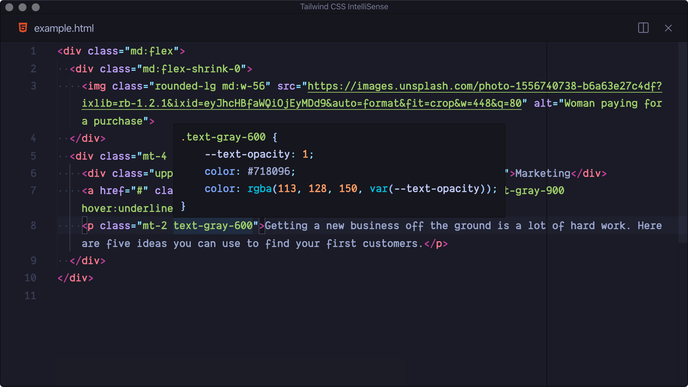

- Introduce you to Tailwind
- Encourage you to try it one day
Goals for today:
What is Tailwind?
"...A utility-first CSS-framework aimed at rapid website development. In essence, it provides thousands of tiny classes to use directly in HTML markup."
Tailwind website
- Naming classes is hard and tedious.
- Large CSS codebases are notoriously difficult to maintain.
- Things like Bootstrap or MUI are great helpers, but they lack in flexibility.
Cons of plain CSS:
- No more wasting time and energy inventing class names.
- Your CSS stops growing.
- Making changes feels safer.
This way has multiple advantages:
States
Setting state is extremely easy in Tailwind. You just add a corresponding prefix to class:
States
The list of prefixes includes:
- Pseudo-classes.
- Pseudo-elements.
- Attribute selectors.
- Media queries.
- Dark mode.
States
These modifiers can also be stacked together, like this:
Reusing styles
If, for some reason you still need semantic classes, you can create them with @apply feature:
@tailwind base;
@tailwind components;
@tailwind utilities;
@layer components {
.btn-primary {
@apply py-2 px-4 bg-blue-500 text-white font-semibold
rounded-lg shadow-md hover:bg-blue-700 focus:outline-none
focus:ring-2 focus:ring-blue-400 focus:ring-opacity-75;
}
}
Purge

Official intellisense tool

Official intellisense tool

Summary
Pros:
- Rapid element styling.
- Reusability.
- One unified design system.
- Minified production bundle.
- Intellisense.
- Overall simplicity.
Summary
Cons:
- Classes aren`t semantic anymore.
- Arguably, it looks gross. Especially when component has 10+ classes on it.